DataWerk · COS30045 · Design Book draft
Ghi chú cho nhóm (xóa trước khi nộp):
web_proto_v1/scripts/build_data.py theo định nghĩa của Design Book §1 v2: ngày nằm viện = (Bed days − Died_bed_days) ÷ Hospitalisations, nên ra 9,1 ngày với người đi bộ. KNIME của Cường không trừ Died_bed_days, nên ra 9,2. Hai bạn cần chốt một cách tính rồi sửa cho khớp.docs/references.md, phải có người mở từng nguồn và kiểm tra trước khi đưa vào bản nộp.docs/sketches/datawerk_palette_v2.png), bỏ dark mode vì palette chỉ định nghĩa trên nền trắng, code chung theo interface init(el, data) + update(state) trong constants.js / data.js / main.js.constants.js → nhóm cần duyệt và có thể thêm vào file palette. Chế độ mù màu là mô phỏng (Machado et al., 2009), đã kiểm tra ra đúng các ô Deuteranopia/Protanopia/Tritanopia/Achromatopsia trong palette.js/sources.js.The website is a single scrollytelling page built with Scrollama, in the martini-glass structure described by Segel and Heer (2010): an opening, five chapters that each make one point, a Summary and a Sources section. Readers scroll as on any web page (mouse wheel, trackpad, ↓, Space); Scrollama detects which chapter is in the middle of the screen and updates the page. In Chapter 1 the chart stays pinned (sticky) while short text steps scroll past it, and each step changes what the chart shows (Figure 6). → / ← and two arrow buttons fixed on the right of the screen move to the next or previous part: a chapter, or inside Chapter 1 the next or previous message, so the scrollytelling is read one message at a time. A stepper at the top always shows every chapter name, highlights the current one and jumps to any chapter on click, so after the Summary the reader can return to any part (the reader-driven end of the martini glass). An earlier version showed one chapter per screen with a Next button; scrolling was chosen instead because it is the interaction readers already know and it lets Scrollama drive the scrollytelling.
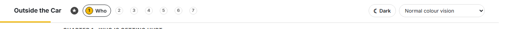
Two reader preferences sit in the top-right corner: a light/dark switch (dark uses the palette's ink/asphalt as background) and a colour-vision select that previews every chart as seen with deuteranopia, protanopia, tritanopia or achromatopsia.
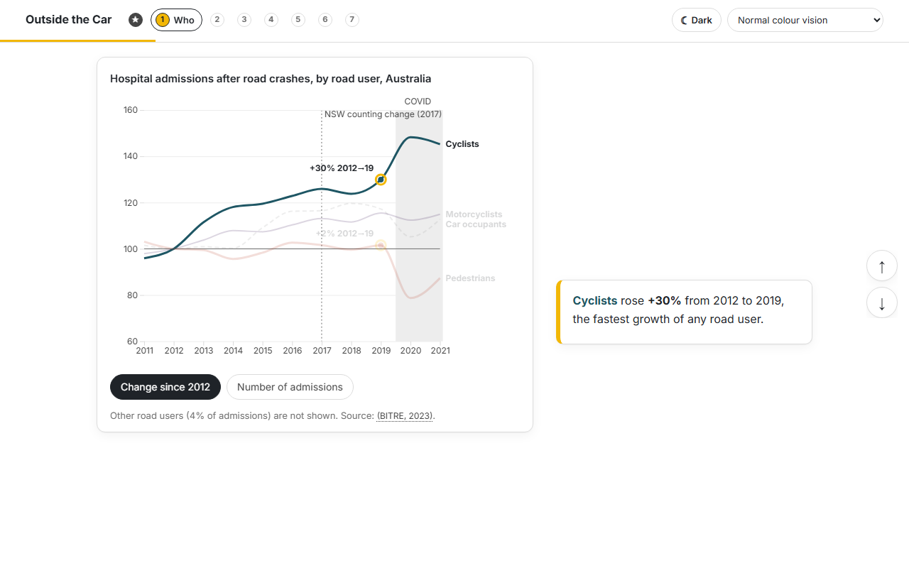
Every chapter uses the same pattern so readers learn the layout once:
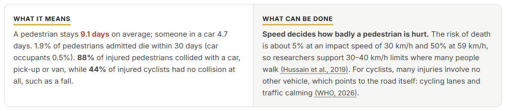
The storyboard follows one persona from the target audience (Design Book §1.1): Mai, 34, drives to work; her mother, 77, walks to the shops every day. It shows how she answers the three key questions (Q1–Q3) through the site.
Chart types were chosen from the task each chart supports (Munzner, 2014) and from how accurately people read each visual encoding: position on a common scale is read most accurately, then length, with angle, area and colour saturation read less accurately (Cleveland & McGill, 1984). Most charts therefore use position or length; colour saturation is used only on the tile map, where every value is also printed.
| Chart | Data shown | Question answered | Why this chart type |
|---|---|---|---|
| Opening · "The ward" (unit chart / isotype) | Bed days of pedestrians and cyclists, 2011–2021, ÷ 4,018 days = 120 beds filled every day (65 pedestrian, 55 cyclist) | Hook: how big is the burden, in human terms? | One icon = one bed makes an abstract total countable and concrete, the same idea as the "stolen years" of Periscopic's U.S. Gun Deaths. Pictographs improve engagement and recall without hurting accuracy (Haroz et al., 2015). Rejected: one big number alone (less felt). |
| Ch1 · Multi-line chart, indexed (2012 = 100) with Count toggle, in a Scrollama scrollytelling section | Hospitalisations per year, 4 road-user groups, 2011–2021 | Q2: has it improved over time? Which group is growing fastest? | Lines show change over continuous time. Indexing puts groups of very different size on one scale so growth can be compared; Count restores absolute size. Scroll steps highlight one group at a time so the text and the line being discussed match. Rejected: stacked area (only the bottom layer has a common baseline, so growth of middle layers is hard to read). |
| Ch2 · Cleveland dot plot, sorted, measure toggle | Average days in hospital; % died within 30 days; share of bed days ÷ share of hospitalisations; by road user | Q1: who is hurt most severely? | Position on a common scale, sorted, with an average reference line. Less ink than bars, so the ranking stands out. Zero baseline kept so values can be read as ratios ("twice as long"). Rejected: pie of bed days (angle is read poorly). |
| Ch2 · 100% stacked horizontal bar | Share of hospitalisations by counterparty (car/van, heavy vehicle, motorcycle, fixed object, no collision, other), pedestrians vs cyclists | Q3: how do these injuries happen? | Part-to-whole for two groups side by side; the dominant segment of each (88% car; 44% no collision) is labelled and read as length. Rejected: two pie charts (angles cannot be compared across pies). |
| Ch3 · Vertical bar chart by age group, two toggles | Pedestrians or cyclists × days in hospital / died within 30 days / rate per 100,000 (ABS population), 7 age groups | Q2: who among pedestrians and cyclists is most at risk? | Ordered categories with a zero baseline. The y-scale is fixed across both road users, so switching does not silently rescale. The 75+ bar is full-strength colour and labelled because it carries the chapter's point. Rejected: age–sex pyramid (sex is not part of the question). |
| Ch4 · Line chart of seasonal index | Each month ÷ average month, 2011–2019, pedestrians vs cyclists | Q2: when in the year is risk highest? | Index (1.0 = average month) shows the seasonal shape of two groups whose sizes differ 2.6×. Winter band shaded. COVID years excluded. Rejected: month × year heatmap (hard to compare two groups). |
| Ch4 · Tile-grid map + linked line chart | Hospitalisations per 100,000 people by state (BITRE ÷ ABS population, 2011–2021 pooled); selected state's yearly rate vs Australia | Q2: where is risk highest, fairly compared? | Equal-size tiles stop land area from dominating (WA, NT) and keep ACT visible; values printed on tiles. The linked chart gives detail on demand. Rejected: choropleth (area bias); raw counts (follow population). |
| Ch5 · Role picker with stat cards | Figures already shown, filtered by role; actions ordered system → driver → extra protection, each with a citation to an official source | Q3: what can I, or government, do? | Turns the story into a decision for the reader's own situation: the reader-driven end of the martini-glass structure (Segel & Heer, 2010). |
| Summary · five stat cards | One headline number, one finding and one action per chapter | All: what did I learn, and what should I do? | Repeats the key number of each chapter in one view so the message is remembered, with a Revisit button on each card. Rejected: a text-only conclusion (the first prototype), which reviewers found hard to take in. |
Table 5: Chart types and justification
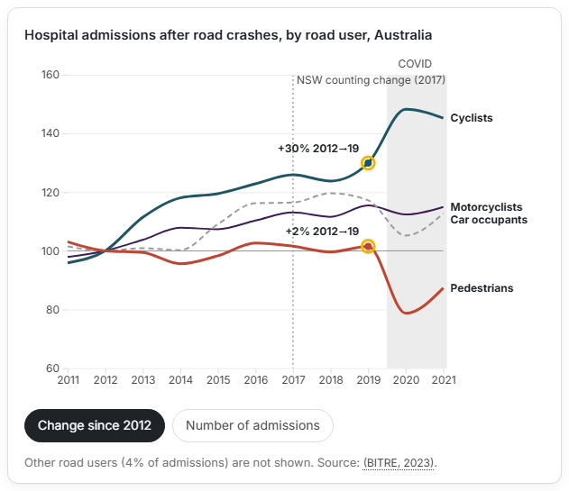
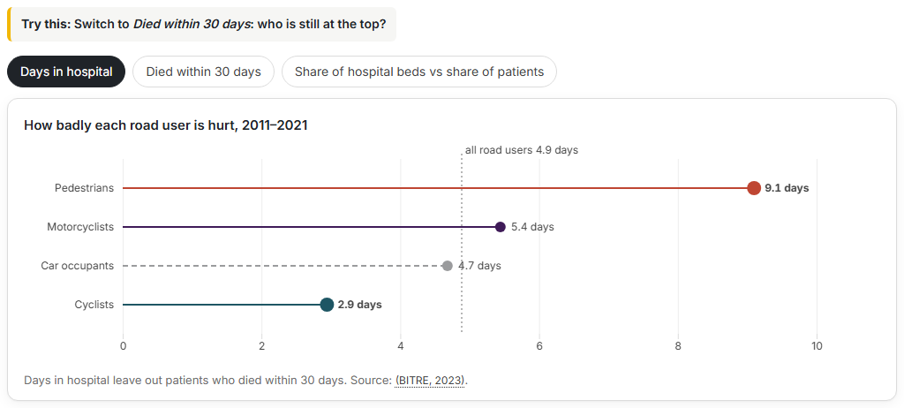
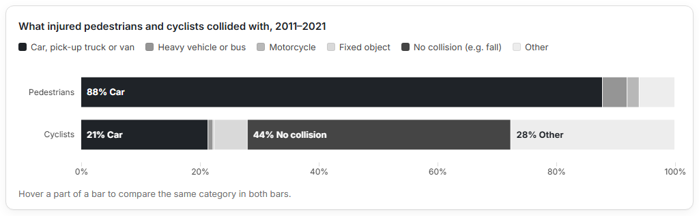
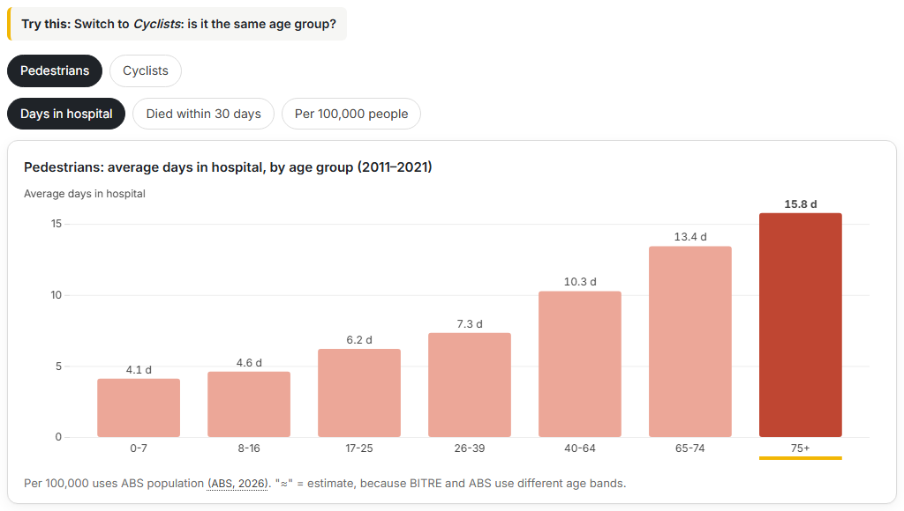
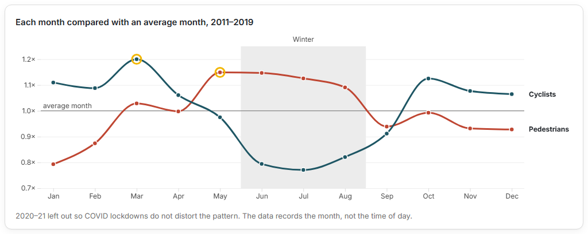
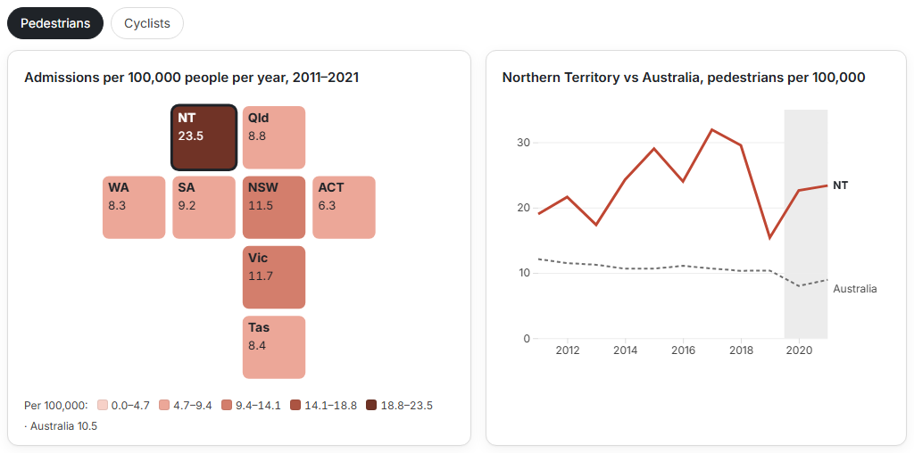
Following Tufte (2001), the size of each mark should match the size of the number it shows, and the data should be shown in context.
data-fact fields in main.js).Colours come from the team palette (docs/sketches/datawerk_palette_v2.png): one colour per road user on every chart, chosen so the four road users stay distinct when simulated for deuteranopia, protanopia, tritanopia and full greyscale (worst pair ΔE2000 = 11.3). Contrast was checked against WCAG 2.1 (W3C, 2018) with the relative-luminance formula, on the white background:
| Element | Colour on #FFFFFF | Contrast | Requirement / use |
|---|---|---|---|
| Pedestrian | #BF4632 | 5.1 : 1 | ≥ 4.5, usable as text (1.4.3) ✓ |
| Pedal cyclist | #1E5664 | 8.2 : 1 | ≥ 4.5, usable as text ✓ |
| Motorcyclist | #3F1B58 | 13.9 : 1 | ≥ 4.5, usable as text ✓ |
| Car occupant | #9A9B9D | 2.8 : 1 | Below 3 : 1 on purpose (context, not the story): car lines are always dashed and directly labelled in dark grey |
| Body text / ink | #454545 / #1F2328 | 9.6 / 15.8 : 1 | ≥ 4.5 ✓ |
| Chart notes (13 px) | #6E6E6E | 5.1 : 1 | ≥ 4.5 ✓ |
| Dark theme: pedestrian / cyclist / motorcyclist / car | on #1F2328 | 4.9 / 6.8 / 11.2 / 3.1 : 1 | Lighter steps of the same hues (pedestrian and cyclist from the palette ramps); car stays dashed + labelled. Not in the palette image yet: team to approve |
| Road-marking accent | #F2B705 | 1.8 : 1 | Never text or data: only rings, bars and edges next to ink (ink on yellow 8.7 : 1) |
aria-current="step" on the current chapter. Scrollytelling text is ordinary HTML in reading order, so nothing is lost if a reader scrolls fast.<button>s with aria-pressed; state tiles are focusable (tabindex="0", role="button") and respond to Enter/Space; a skip link jumps to the content; focus is always visible.role="img" labelled by its title; tiles have a full-sentence aria-label; the role panel and state detail are aria-live so changes are announced.prefers-reduced-motion.viewBox sized to its container and is redrawn when the width changes (debounced), so axes and labels are re-laid out rather than scaled down.palette(theme, cvd), so switching theme or colour-vision view redraws the charts without reloading; the choice is remembered and applied before the page first paints.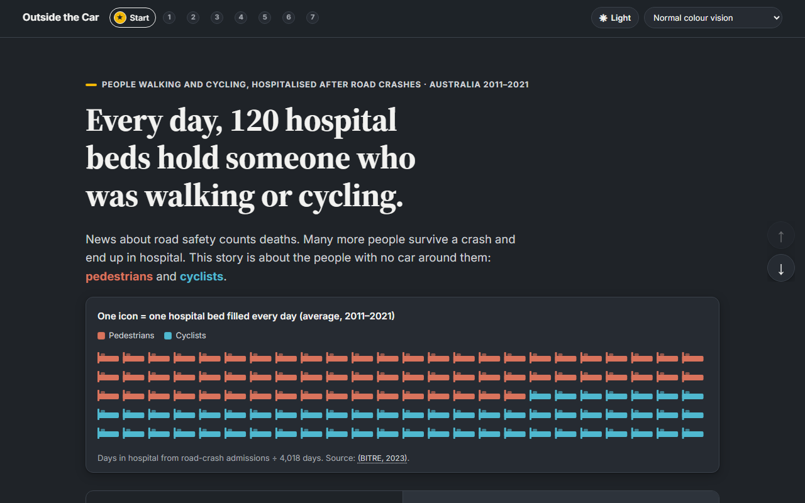
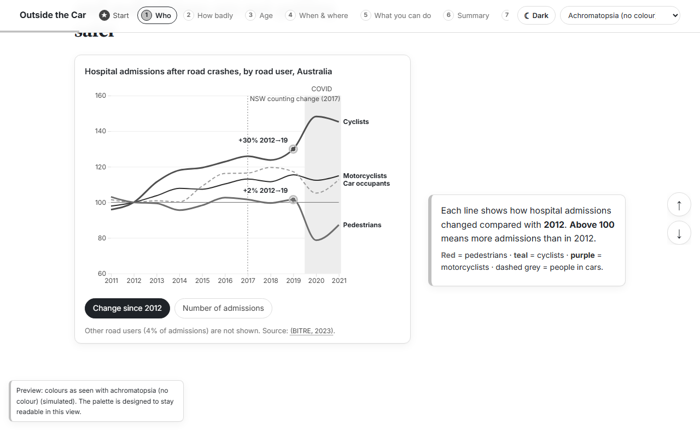
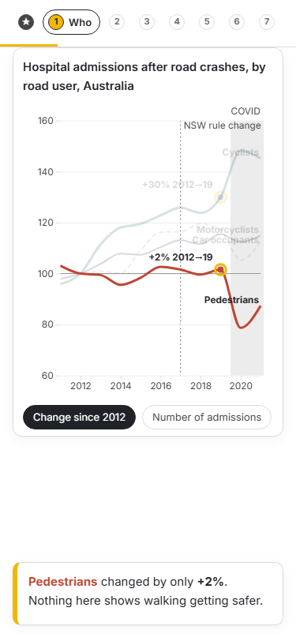
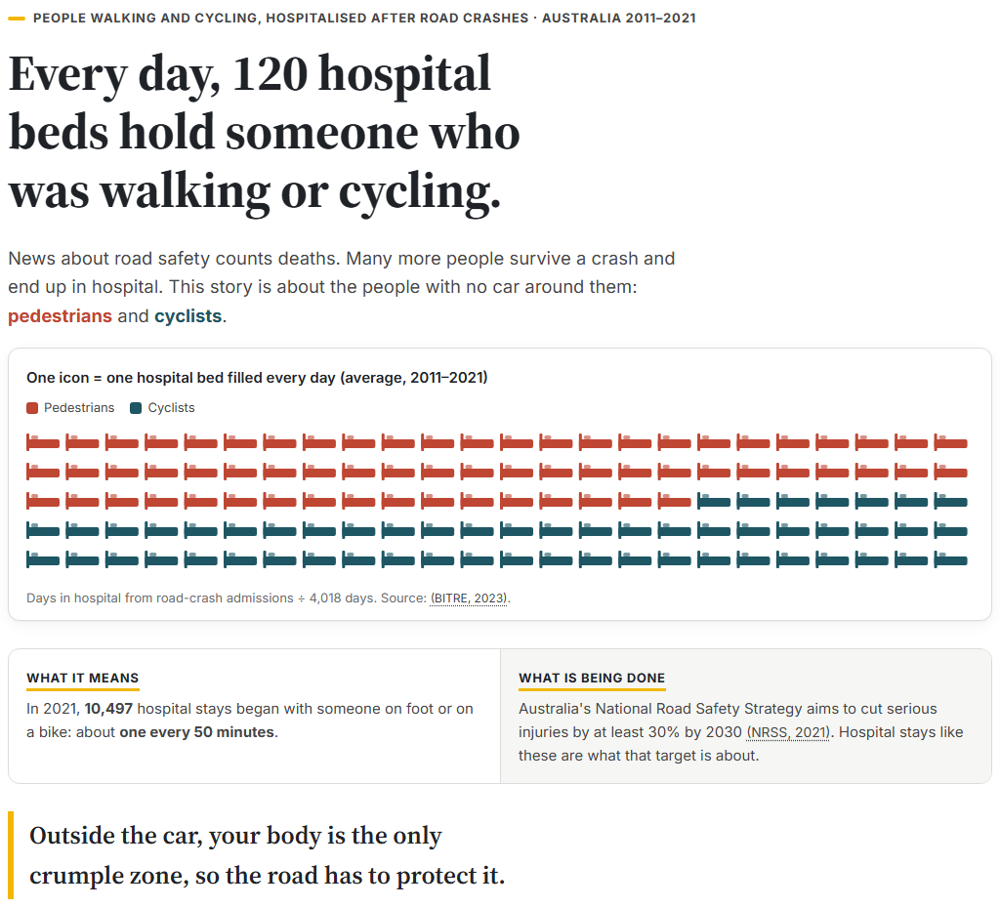
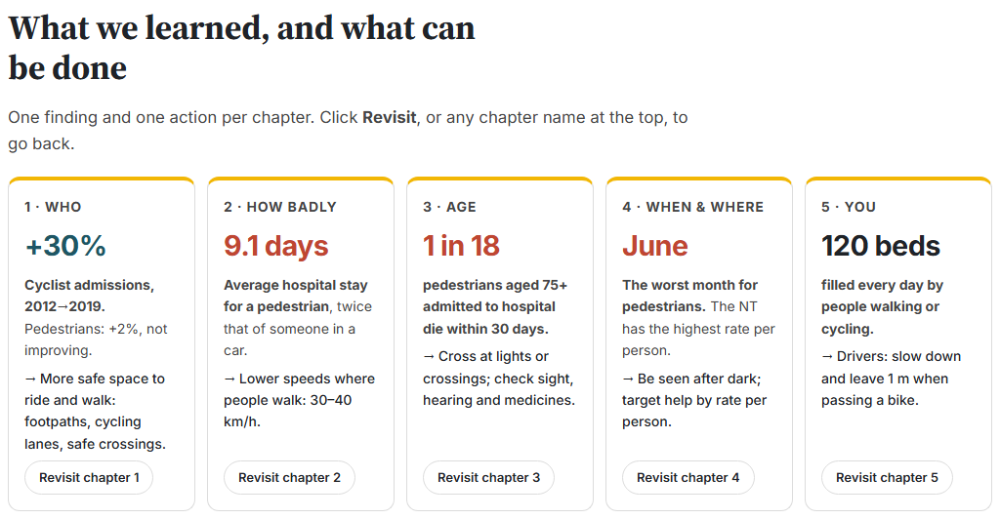
Navigation is scrollytelling with Scrollama: scrolling (wheel, trackpad, ↓/↑, Space) moves through the story and Scrollama turns scroll position into state (the current chapter and, in Chapter 1, the chart's mode and highlighted group). →/← and the side arrow buttons move one part at a time (each Chapter 1 message, then each chapter), and the stepper and the Summary's Revisit buttons jump to any chapter. Two preferences change how everything looks: light/dark theme and colour-vision view. Inside each chapter, interaction follows Shneiderman's (1996) "overview first, zoom and filter, then details on demand": the chapter opens on its main finding (overview), toggles let readers filter or change the measure, and tooltips and the linked state chart give details on demand. Every control is a single click or tap, nothing depends on hover alone, and the story makes sense without touching any chart control.
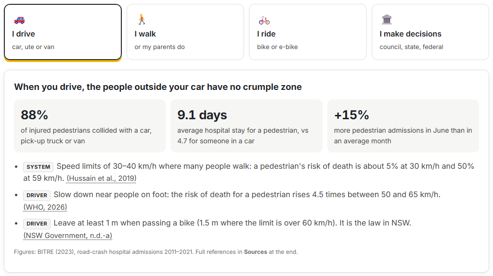
| Interaction | Method (hover, click, drag…) | Expected user behaviour | System response |
|---|---|---|---|
| Scroll through the story | Mouse wheel, trackpad, ↓/↑, Space, Page Up/Down | Read in order | Native scrolling. Scrollama marks the chapter in the middle of the screen as current: stepper and progress bar update; the opening's ward animates the first time it is reached. |
| Next / previous part | Click the ↓ / ↑ buttons on the right, or press → / ← | Move through the story one step at a time | Smooth scroll to the next / previous stop: in Chapter 1 each message (the chart changes with it), elsewhere each chapter. Buttons show "Next: …" on hover/focus and are disabled at the start/end; pressing twice moves two stops. |
| Scrollytelling steps (Ch1) | Scroll past the text steps | Follow the explanation one point at a time | The chart stays pinned; each step sets the chart's mode and highlighted group (all lines → cyclists → pedestrians → COVID note → counts); the active step gets a yellow edge. |
| Stepper jump | Click a chapter name at the top | Go to any chapter | Smooth scroll to that chapter; passed chapters are filled, the current one has an outline and a yellow dot. On phones the row scrolls to keep the current chapter in view. |
| Revisit | Click "Revisit chapter n" on a Summary card | Review one part | Scrolls back to that chapter; the stepper returns to the Summary. |
| Citation | Hover or Tab to "(Author, year)" | Check where an action comes from | Tooltip with the full APA reference; full list in the Sources step. |
| Theme switch | Click ☾ Dark / ☀ Light (top right) | Read in a dark room or in print colours | Page and charts switch theme instantly; choice remembered. |
| Colour-vision view | Choose in the select (top right) | Check how the charts look with each type of colour blindness | All chart colours, legends and highlighted text are re-coloured with the simulation; a note says it is a simulated preview. |
| Ward animation | Reach the opening (Scrollama, automatic) | Watch the beds fill | Beds appear one by one (once); shown instantly with reduced motion. |
| Ward tooltip | Hover / tap a bed | Check what one bed stands for | Tooltip: group, beds per day, total bed days. |
| Growth ↔ Count toggle (Ch1) | Click chip | Compare growth rates, then absolute sizes | Lines redraw on the new scale; 2012→19 labels stay. |
| Year crosshair (Ch1) | Hover / move along the chart | Read exact values for one year | Vertical guide + tooltip listing all groups (count and index); "(COVID)" for 2020–21. |
| Severity measure toggle (Ch2) | Click chip (3 options) | See if pedestrians rank worst on every measure | Dots re-sort and animate to new positions; reference line and labels update. |
| Counterparty highlight (Ch2) | Hover a segment | Compare one category across both groups | Same category stays solid in both bars, others fade; tooltip with count and share. |
| Road user + measure toggles (Ch3) | Click chips (2 × 3) | Compare ages for pedestrians vs cyclists | Bars animate; title updates; y-scale fixed so values stay comparable. |
| Month tooltip (Ch4) | Hover a point | Read the size of the winter peak | Tooltip: count and % above/below the average month. |
| State tile select (Ch4) | Click, or Tab + Enter | Choose own state | Tile outlined; linked chart shows that state's yearly rate vs Australia (announced via aria-live). |
| Pedestrians ↔ Cyclists (Ch4 map) | Click chip | Check whether the same states lead | Tile colours and values recompute; detail chart updates. |
| Role picker (Ch5) | Click a role card | Find figures and actions for their own situation | Panel updates: 3 stat cards + actions (system → driver → extra protection); focus moves to the panel. |
| Resize / rotate | Change window or device width | Read on phone or desktop | Every chart redraws for the new width and Scrollama recalculates its trigger points (see Scalability). |
Table 6: Interactions
All entries are verify: open each source and check it says what we claim before moving it to docs/references.md as ✅.
Australian Bureau of Statistics. (2026). Regional population by age and sex, 2025 [Data set, Cat. no. 3235.0, LGA tables]. https://www.abs.gov.au/
Bureau of Infrastructure and Transport Research Economics. (2023). Hospitalised injury [Data set]. Australian Government. https://www.bitre.gov.au/publications/ongoing/hospitalised-injury
Cleveland, W. S., & McGill, R. (1984). Graphical perception: Theory, experimentation, and application to the development of graphical methods. Journal of the American Statistical Association, 79(387), 531–554. https://doi.org/10.1080/01621459.1984.10478080
Haroz, S., Kosara, R., & Franconeri, S. L. (2015). ISOTYPE visualization: Working memory, performance, and engagement with pictographs. In Proceedings of the 33rd Annual ACM Conference on Human Factors in Computing Systems (pp. 1191–1200). ACM. https://doi.org/10.1145/2702123.2702275
Knaflic, C. N. (2015). Storytelling with data: A data visualization guide for business professionals. Wiley.
Munzner, T. (2014). Visualization analysis and design. CRC Press.
Okabe, M., & Ito, K. (2008). Color universal design (CUD): How to make figures and presentations that are friendly to colorblind people. J*Fly. https://jfly.uni-koeln.de/color/
Periscopic. (2013). U.S. gun deaths in 2013 [Interactive visualisation]. https://guns.periscopic.com/
Segel, E., & Heer, J. (2010). Narrative visualization: Telling stories with data. IEEE Transactions on Visualization and Computer Graphics, 16(6), 1139–1148. https://doi.org/10.1109/TVCG.2010.179
Shneiderman, B. (1996). The eyes have it: A task by data type taxonomy for information visualizations. In Proceedings 1996 IEEE Symposium on Visual Languages (pp. 336–343). IEEE. https://doi.org/10.1109/VL.1996.545307
Tufte, E. R. (2001). The visual display of quantitative information (2nd ed.). Graphics Press.
World Wide Web Consortium. (2018). Web Content Accessibility Guidelines (WCAG) 2.1. https://www.w3.org/TR/WCAG21/